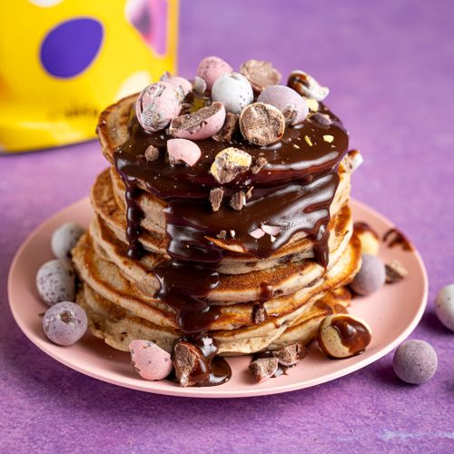

Pancakes

Description
Is there really anything better than a big stack of fluffy homemade pancakes?? This easy, go-to homemade pancake recipe is the perfect base recipe to start your weekend pancake-making tradition. They’re fluffy, golden, and oh-so cozy! Making pancakes is pretty easy, but I’ve got a few tips and tricks for you to make sure your pancakes are the fluffiest and tastiest stack around!
Ingredients
- 1 cup All-Purpose Flour
- 1.5 Teaspoon Baking Powder
- 1/2 Teaspoon Salt
- 3/4 Cup Warm Milk
- 2 Tablespoon Melted Butter
- 1 Large Egg
- 2 Tablespoon Sugar
- 1/2 Teaspoon Vanilla Extract
- 4 Teaspoon Cooking Oil
Steps
- Whisk together the flour, baking powder, and salt in a bowl.
- In a separate bowl, whisk together the milk, egg, melted butter, sugar, and vanilla extract.
- Pour the bowl of wet ingredients into the bowl of dry ingredients and stir just until combined. DO NOT overmix. The mixture should be thick, but still pourable, and a little bit lumpy. If it's not pourable, add an additional tablespoon or two of milk until it is thick, but pourable. Let the batter rest for 15 minutes.
- Heat a large skillet or griddle over medium. Once hot add enough cooking oil to coat the surface (I use about ½ tsp per pancake). Add the pancake batter to the hot griddle, ¼ cup at a time. Use the back of the measuring cup to spread the batter into a 4.5-inch diameter circle.
- Cook the pancakes until bubbles form over the surface and begin to pop, the edges of the pancakes look dry, and the bottom is golden brown (about 60 seconds). Flip the pancakes and cook on the second side until golden brown (about 30 seconds).
- Repeat with the remaining batter, adding more oil to the skillet between batches or as needed, until all of the pancakes have been cooked. Keep the pancakes warm on a plate under a towel or in a warm oven until all of the pancakes have been cooked. Serve warm with your favorite toppings!